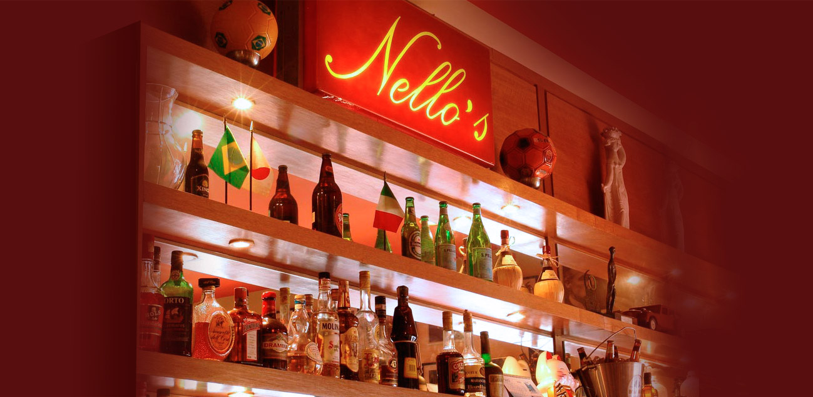

Benvenuto
Bem Vindo

NOVIDADES
restaurante da vila leopoldina fechado estamos muito orgulhosos de usar embalagens biodegradáveis!
Pedidos aqui em nosso site ou pela rappi. Agora tambem na appjusto uma iniciativa que merece sua participação: appjusto.com.br/r/nellos
Promoções
Diversos filmes nos videos de nosso facebook (clique) aproveitem!
Seu pedido na palma da mão! Baixe agora no seu celular! Para ios e android! Primeiro pedido com entrega grátis dentro de nossa área! Clique aqui para baixar (ios ou android)
ESPECIALIDADES
Gruno no whatsappEntre no nosso grupo e saiba quando teremos especialidades (rabada, tripa, ossobuco, língua, cordeiro, bacalhau, gnocchi recheado, etc)